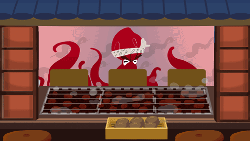

le poulpe est dans un bar japonais, il doit choisir une grill. L’enfant déplace le poulpe avec son doigt pour le placer au bon endroit il vole et se déplace (animation n°1). si il est mis dans la bonne syllabe le poulpe cuit et devient des brochettes de poulpe (animation n°2). si c’est la mauvaise réponde il crache sur l’écran et reviens a la position initial (animation in coming).
